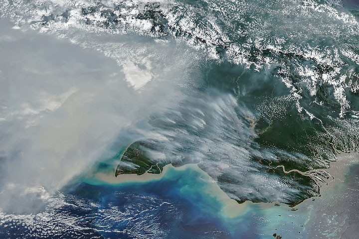

01
Kairat - Panathinaikos 0 - 3 | GOL - Cyriel Dessers
GZH · 22/10/2026 · 13:02 (Brasília)Fonte original ↗
 Folha VitóriaEspírito Santo apresenta destinos turísticos a agentes de viagens na Argentina
Folha VitóriaEspírito Santo apresenta destinos turísticos a agentes de viagens na Argentina noticias.uol.com.brUcrânia ordena evacuação das famílias em seus dois últimos grandes redutos no lesteGZHMelhores momentos: Al Hazem 2 x 2 Al Fayha (Saudi Pro League)Jagonews24A África do Sul venceu a Austrália por uma entrada no Teste Gqeberha
noticias.uol.com.brUcrânia ordena evacuação das famílias em seus dois últimos grandes redutos no lesteGZHMelhores momentos: Al Hazem 2 x 2 Al Fayha (Saudi Pro League)Jagonews24A África do Sul venceu a Austrália por uma entrada no Teste Gqeberha NSC TotalMexilhão invasor da China se espalha em três regiões do Brasil, ameaça travar hidrelétricas e afetar até água potávelFlorida TodayTorre SpaceX tentará capturar o impulsionador da Starship após o primeiro lançamento na FlóridaCidadeVerde.comBatalha terá troca de bomba para reforçar abastecimentoCNN BrasilPetróleo atinge máxima de cinco meses com novas tensões no Oriente MédioSciTechDailyEstudo descobre que o Ártico pode perder muito mais gelo marinho do que os cientistas previram anteriormente
NSC TotalMexilhão invasor da China se espalha em três regiões do Brasil, ameaça travar hidrelétricas e afetar até água potávelFlorida TodayTorre SpaceX tentará capturar o impulsionador da Starship após o primeiro lançamento na FlóridaCidadeVerde.comBatalha terá troca de bomba para reforçar abastecimentoCNN BrasilPetróleo atinge máxima de cinco meses com novas tensões no Oriente MédioSciTechDailyEstudo descobre que o Ártico pode perder muito mais gelo marinho do que os cientistas previram anteriormente www.trtworld.comPrincipais diplomatas europeus e do Médio Oriente reunir-se-ão em Istambul para a 9ª conferência de mediaçãoO GLOBOEx-candidata à Presidência do Equador Luisa González é presa em investigação sobre lavagem de dinheiroAgencia AndinaExpoAmazónica 2026 in Pucallpa: Over 400 stands and 60,000 visitors expected
www.trtworld.comPrincipais diplomatas europeus e do Médio Oriente reunir-se-ão em Istambul para a 9ª conferência de mediaçãoO GLOBOEx-candidata à Presidência do Equador Luisa González é presa em investigação sobre lavagem de dinheiroAgencia AndinaExpoAmazónica 2026 in Pucallpa: Over 400 stands and 60,000 visitors expected BBC WorldGêmeos recém-nascidos lutam pela sobrevivência enquanto o conflito alimenta a crise de fome no Iêmenwww.msn.comMassad Boulos deve garantir que a paz no Sudão e na Líbia não seja feita às custas de IsraelThe Diplomat – Asia-Pacific Current Affairs MagazineOs EUA estão perdendo para a China na batalha pela influência global
BBC WorldGêmeos recém-nascidos lutam pela sobrevivência enquanto o conflito alimenta a crise de fome no Iêmenwww.msn.comMassad Boulos deve garantir que a paz no Sudão e na Líbia não seja feita às custas de IsraelThe Diplomat – Asia-Pacific Current Affairs MagazineOs EUA estão perdendo para a China na batalha pela influência global O DiaInea investiga abertura de canal entre lagoa e mar na Praia do FogueteTribuna do Norte2ª Guerra: Professor denuncia risco de perda de vestígios históricos na área da Rampawww.solomonstarnews.comDBSI Announces New Financial InitiativeThe ScientistA pesquisa do neurônio-espelho passa do hype para os mecanismosMiddle East MonitorPor que a Indonésia aderiu ao pacto de Badr e o que deve fazer a seguirCorreio do PovoAmericano preso na Rússia acusado de lutar pela Ucrânia retorna aos EUASail-World.com2026 Switch Global Youth Championship at Fraglia Vela MalcesineSBT NewsAtaques israelenses matam três palestinos na Faixa de Gazapan african visionsO Zimbabué insta a UA a convocar uma Cimeira Bienal de Educação e Competências em África na recente Semana de Competências em África de 2026NDTV Profit'Nunca feito até que esteja feito': Jaishankar sobre o acordo comercial Índia-EUA e riscos tarifáriosYahoo TechOs astronautas da ISS capturaram fotos incríveis da Terra. Aqui está uma olhadaRiverBender.comIrã diz que sete petroleiros foram atacados no Estreito de Ormuz à medida que crescem os temores de um retorno à guerrawww.postcourier.com.pgOMS alerta que os sistemas de saúde do Pacífico enfrentam crescentes pressões climáticas e de financiamentoBBCOnly one female scientist named in GCSEs, research findsAl Arabiya EnglishTurquia sediará FMs regionais e europeus para negociações sobre conflitos regionais: FonteGazeta EsportivaJogador é suspenso após atingir bandeirinha com pedra em jogo da terceira divisão do EquadorNational Security JournalOs militares russos acabam de entregar ao planeta Terra uma dica gigante de que a guerra na Ucrânia não vai parar tão cedo
O DiaInea investiga abertura de canal entre lagoa e mar na Praia do FogueteTribuna do Norte2ª Guerra: Professor denuncia risco de perda de vestígios históricos na área da Rampawww.solomonstarnews.comDBSI Announces New Financial InitiativeThe ScientistA pesquisa do neurônio-espelho passa do hype para os mecanismosMiddle East MonitorPor que a Indonésia aderiu ao pacto de Badr e o que deve fazer a seguirCorreio do PovoAmericano preso na Rússia acusado de lutar pela Ucrânia retorna aos EUASail-World.com2026 Switch Global Youth Championship at Fraglia Vela MalcesineSBT NewsAtaques israelenses matam três palestinos na Faixa de Gazapan african visionsO Zimbabué insta a UA a convocar uma Cimeira Bienal de Educação e Competências em África na recente Semana de Competências em África de 2026NDTV Profit'Nunca feito até que esteja feito': Jaishankar sobre o acordo comercial Índia-EUA e riscos tarifáriosYahoo TechOs astronautas da ISS capturaram fotos incríveis da Terra. Aqui está uma olhadaRiverBender.comIrã diz que sete petroleiros foram atacados no Estreito de Ormuz à medida que crescem os temores de um retorno à guerrawww.postcourier.com.pgOMS alerta que os sistemas de saúde do Pacífico enfrentam crescentes pressões climáticas e de financiamentoBBCOnly one female scientist named in GCSEs, research findsAl Arabiya EnglishTurquia sediará FMs regionais e europeus para negociações sobre conflitos regionais: FonteGazeta EsportivaJogador é suspenso após atingir bandeirinha com pedra em jogo da terceira divisão do EquadorNational Security JournalOs militares russos acabam de entregar ao planeta Terra uma dica gigante de que a guerra na Ucrânia não vai parar tão cedoA Defensoria Pública da União (DPU) acionou o Supremo Tribunal Federal (STF) para tentar assegurar o direito das eleitoras e eleitores de todo o Brasil ao transporte público gratuito no segundo turno das eleições para presidente da República e governadores, onde houver.. Instituição responsável por promover e defender, perante a Justiça, os direitos individuais e coletivos, sobretudo dos menos privilegiados, a DPU pediu à Corte uma liminar de abrangência nacional que obrigue o poder público a, no próximo domingo (25), assegurar o transporte público municipal e intermunicipal gratuitamente . Notícias relacionadas: Justiça Eleitoral nega transp
As autoridades ucranianas ordenaram, nesta quinta-feira (22), a evacuação obrigatória de famílias com filhos nas duas principais aglomerações urbanas do Donbass que ainda estão sob seu controle: Kramatorsk e Sloviansk. Essas duas cidades são os últimos
A Agência Nacional de Vigilância Sanitária (Anvisa) proibiu a venda de tiras de glicemia da marca Accu-Check Active na plataforma Amazon. Os produtos, segundo a agência, são falsificados e não podem ser distribuídos, importados nem utilizados. Notícias relacionadas: Anvisa aprova novo medicamento para câncer de pulmão avançado. A resolução foi publicada nesta quinta-feira (22) no Diário Oficial da União. Em nota, a Anvisa informou que a Roche Diabetes Care Brasil Ltda., responsável pelo produto Accu-Chek Active, identificou no mercado tiras reagentes com características divergentes das originais em dois anúncios na Amazon. “Além da ausência d
A conferência que começa na sexta-feira reunirá participantes de nível ministerial, altos representantes de organizações internacionais.
A família de Raghad e Raad teve que fugir de casa a pé por causa dos combates entre as forças pró-governo e os Houthis.

2026 Switch Global Youth Championship em Fraglia Vela Malcesine Sail-World.com
Zimbabué Insta a UA a convocar uma Cimeira Bienal de Educação e Competências em África na recente Semana de Competências em África 2026 visões pan-africanas
O Irã diz que 7 petroleiros foram atacados no Estreito de Ormuz à medida que crescem os temores de um retorno à guerra RiverBender.com
Os países das Ilhas do Pacífico enfrentam uma pressão crescente sobre os seus sistemas de saúde devido às alterações climáticas, à escassez de mão-de-obra e ao financiamento limitado, com sete países do Pacífico que ainda não incluíram a saúde nos seus planos climáticos nacionais, afirma a Directora Regional do Pacífico Ocidental da Organização Mundial de Saúde (OMS), Dra. Saia Ma’u Piukala.
A Turquia sediará FMs regionais e europeus para negociações sobre conflitos regionais: Fonte Al Arabiya English
Os militares russos acabam de dar ao planeta Terra uma dica gigante de que a guerra na Ucrânia não vai parar tão cedo National Security Journal

O Presidente da Comissão da União Africana, S.E. Mahmoud Ali Youssouf condena veementemente os recentes ataques mortais de drones no Sudão e na área de Abyei. Relatos dos meios de comunicação que citam fontes locais e médicas indicam que aproximadamente 80 pessoas foram mortas em Al-Dibab, Kordofan Ocidental, em 18 de Outubro, 23 em Nyala, Darfur do Sul, em 16 de Outubro, e pelo menos três crianças em Cartum, em 19 de Outubro. Separadamente, relatórios que citam

V Harish, que administrava a popular conta do Instagram “Finance with Harish”, foi encontrado morto na terça-feira.
A bizarra 'Cratera da Aranha' da Austrália vista da foto da órbita do dia em 22 de outubro de 2026 Espaço

Com Israel a preparar-se para possíveis ataques militares contra o Irão e Washington a mostrar moderação antes das eleições intercalares dos EUA, aumentam as questões sobre se a região está a viver uma pausa temporária ditada por cálculos eleitorais ou uma oportunidade final para um acordo político.

Ferramenta de inteligência artificial descobriu falhas ocultas em sistema de gerenciamento de conteúdo, desencadeando resposta global de segurança cibernética.
Treinador, de 48 anos, comanda equipe desde 2018; conversas são por ampliação até a disputa da Copa América daqui a dois anos
Estaleiros indianos dobram pipeline de entrega, mas ainda detêm apenas 0,5% dos pedidos globais The Hindu
A três dias do segundo turno das eleições, termina nesta quinta-feira (22) o prazo para que candidatos façam comícios e atividades de campanha. Também é o último dia para a circulação paga ou impulsionada de propaganda eleitoral na internet. De hoje até 24 horas depois do fim do pleito, ficam vedadas a publicação e a republicação de novos conteúdos produzidos ou alterados por inteligência artificial ou tecnologia equivalente, que use imagem, voz ou manifestação de candidatos ou pessoas públicas. Notícias relacionadas: Eleições: saiba quais documentos são aceitos para votar no 2° turno. Eleições: quem não votou no primeiro turno pode participa
“Guerra pelos Mercados”: XI conferência da Coface para examinar os novos riscos enfrentados pelas empresas e pelo comércio global SeeNews

A doença, que costuma afetar bovinos, foi identificada em um paciente que faleceu no início de outubro.
VÍDEO: Escavadeiras demolindo casas palestinas na Agência de Notícias Qalandia Mehr
Com os locais de lançamento da Flórida online, Musk espera lançamentos semanais da Starship no próximo ano Orlando Sentinel
A queda do dólar faz uma pausa com o Fed em foco Tacoma News Tribune


Vídeo: 00:00:49 Os Open Days 2026 da ESA receberam mais de 23 000 visitantes nos seus seis estabelecimentos, dando ao público a oportunidade de descobrir mais sobre as atividades espaciais da Europa, conhecer as pessoas por detrás das missões e explorar como a ESA está a moldar o futuro do espaço.
A Agência Nacional de Vigilância Sanitária (Anvisa) aprovou novo medicamento para o tratamento do câncer de pulmão. O Emrelis (telisotuzumabe vedotina) é indicado para pacientes adultos com câncer de pulmão de células não pequenas (CPCNP) com as seguintes características: não escamoso, localmente avançado ou metastático, com receptor do fator de crescimento epidérmico tipo selvagem, com alta superexpressão da proteína c-Met e que receberam terapia sistêmica previamente. Em nota, a Anvisa destacou que o medicamento foi desenvolvido para reconhecer e se ligar seletivamente à proteína c-Met presente na superfície das células tumorais, permitindo
Catar e Japão concordam em ampliar relações Arab News
A Força Espacial luta enquanto a SpaceX de Musk aposenta seu principal foguete Yahoo
A Agência Nacional de Vigilância Sanitária (Anvisa) emitiu alerta para reforçar a proibição do uso do suplemento alimentar ashwagandha no Brasil. A erva asiática tem sido indicada, principalmente pela rede social TikTok, para relaxamento e alívio dos sintomas da perimenopausa. Em nota, a Anvisa citou o caso de uma mulher britânica que teve falência do fígado, paradas cardíacas e sérios danos cerebrais após o uso do produto e reforçou que o suplemento não tem registro no Brasil. Notícias relacionadas: Anvisa proíbe lotes de medicamento para tratar câncer. Anvisa determina apreensão de lote falsificado de toxina botulínica. Anvisa proíbe caneta

O Conselho da Agência Espacial Europeia aprovou a nomeação de dois novos diretores: Andrzej Banasiak como Diretor de Comercialização e Parceria Industrial, e Nicolaus Hanowski como Diretor de Operações Espaciais.
Como os engenheiros projetaram e construíram ‘o edifício mais sustentável da Antártica’ Instituição de Engenheiros Mecânicos - IMechE
Agência de Notícias do Oriente Médio - mena

Imagem: Estrelas se formando em um caldeirão nebuloso
O que há sob o gelo? As descobertas assombrosas emergindo de nossas montanhas em derretimento TGO Magazine
Prevenção de conflitos, mediação e construção da paz: Papel da ONU e da Biblioteca da Câmara dos Lordes do Reino Unido
JAXA confirma que a espaçonave MMX está com boa saúde enquanto navega em direção à lua marciana Phobos Starlust.org
Festival de Circo Tini Tinou trará 100 artistas para Siem Reap e Battambang em novembro Camboja
WA dará as boas-vindas ao maior evento de salvamento de vidas no surf do país Mirage News
O Uganda costumava ser um amortecedor do Ébola para o Quénia. Não é mais o EastAfrican
APOD Science APOD APOD: 2026 22 de outubro - O… Arquivo APOD de hoje Índice de envios Pesquisar Calendário RSS Educação Sobre Discutir APOD Astronomia Imagem do dia Descubra o cosmos! Cada dia é apresentada uma imagem ou fotografia diferente do nosso fascinante universo, juntamente com uma breve explicação escrita por um astrônomo profissional. O primeiro […]
Hamas ameaça novo ataque semelhante ao ataque de 7 de outubro ᐉ Notícias de Fakti.bg - World Fakti.bg

É o mais recente de uma série de ataques do movimento Houthi contra aeroportos e outros locais do reino.

As emissões em ambos os lados da ilha são invulgarmente elevadas, à medida que os incêndios provocados pelo homem se espalham numa paisagem ressecada pela seca.
Al-Azhar alerta para a “morte iminente” dos pacientes nos hospitais de Gaza e apela a uma acção global urgente Egypt Independent
Tribunal Penal Internacional ganha o principal prémio de direitos humanos da UE The New York Times

Em segundo turno disputado voto a voto, eleitores mais velhos são grupo estratégico para virada de Lula ou Flávio selar sua vitória, dizem analistas. Mas abstenção acima da média é obstáculo para as ambições dos dois candidatos.